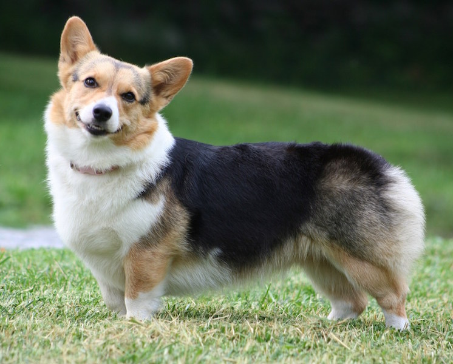

About Corgis / Breeds
There are two breeds of Welsh corgis, the Cardigan and the Pembroke, each named for the county in Wales where it originated.

Appearance
- Sometimes born without a tail, and if they are, it is usually a docked tailed.
- Coat is all shades of red, brindle and sable, black or blue merle.
- More active and slightly bigger.
- Ears are erect, firm, and of medium size, tapering slightly to a rounded point.
- Feet generally point straight forward.
- Height is 10 - 12 inches
- Expression: Intelligent and interested, not sly
Popularity
- Popularized by Queen Elizabeth II, who was a corgi lover
- Ranked 26th in the American Kennel Club.
Temperment
- Extroverted - playful and outgoing
- Highly Intelligent Guard Dog
- Herding dogs that will nip at the heels
Health
- Life expectancy: 12 - 15 years
- Predisposed to Canine Hip Dysplasia, Canine Degenerative Myelopathy, and Progressive Retinal Atrophy
- Susceptible to Intervertebral Disc Disease, Epilepsy.

Appearance
- Born with a full length tail.
- Coat is red, fawn, sable or black and tan.
- Shorter and has smaller ears.
- Ears are rounded at the tips.
- Feet are slightly bowed that point outward.
- Height is 10.5 - 12.5 inches
- Expression: Alert, gentle, watchful, and friendly
Popularity
- First to arrive in the U.S, though will never be as popular as the Pembroke.
- Ranked 85th in the American Kennel Club.
Temperment
- Friendly, but reserved with strangers
- Highly Intelligent Guard Dog
- Herding dogs that will nip at the heels
Health
- Life expectancy: 12 - 14 years
- Fewer documented hereditary health problems.
- Predisposed to Canine Hip Dysplasia, Canine Degenerative Myelopathy, and Progressive Retinal Atrophy.